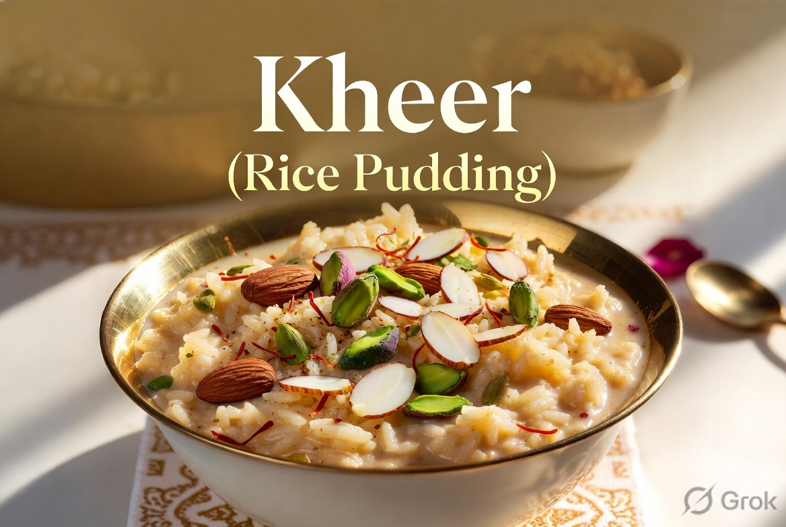

A timeless Indian classic, Kheer is the ultimate comfort dessert — rich, creamy, and delicately fragrant. Made with slow-cooked rice simmered in full-fat milk until beautifully tender, this rice pudding gets its luxurious texture and subtle sweetness from aromatic cardamom, saffron strands, and a handful of toasted nuts.
Every spoonful melts in your mouth, offering the perfect balance of creamy sweetness with the crunch of almonds, pistachios, and the floral hint of rose or saffron. Whether served warm right after cooking or chilled for a refreshing treat, Kheer feels like a warm hug in a bowl.
Perfect for festivals, family gatherings, or simply ending a meal on a sweet note. This easy homemade version tastes just like the one your grandmother made — only better!